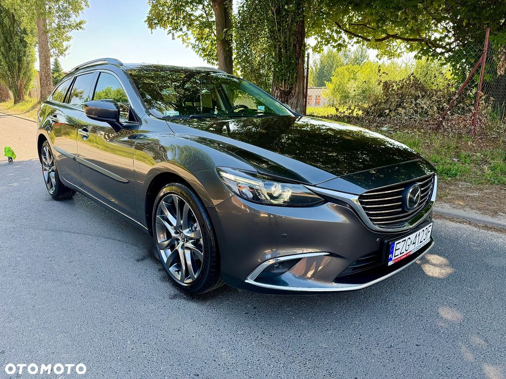
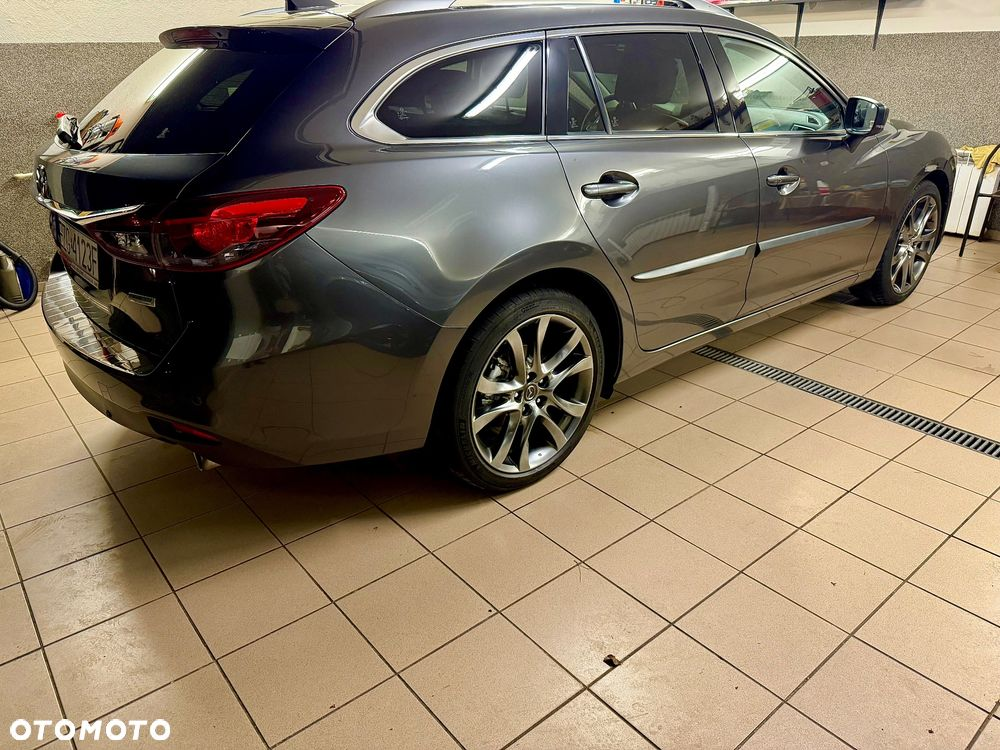
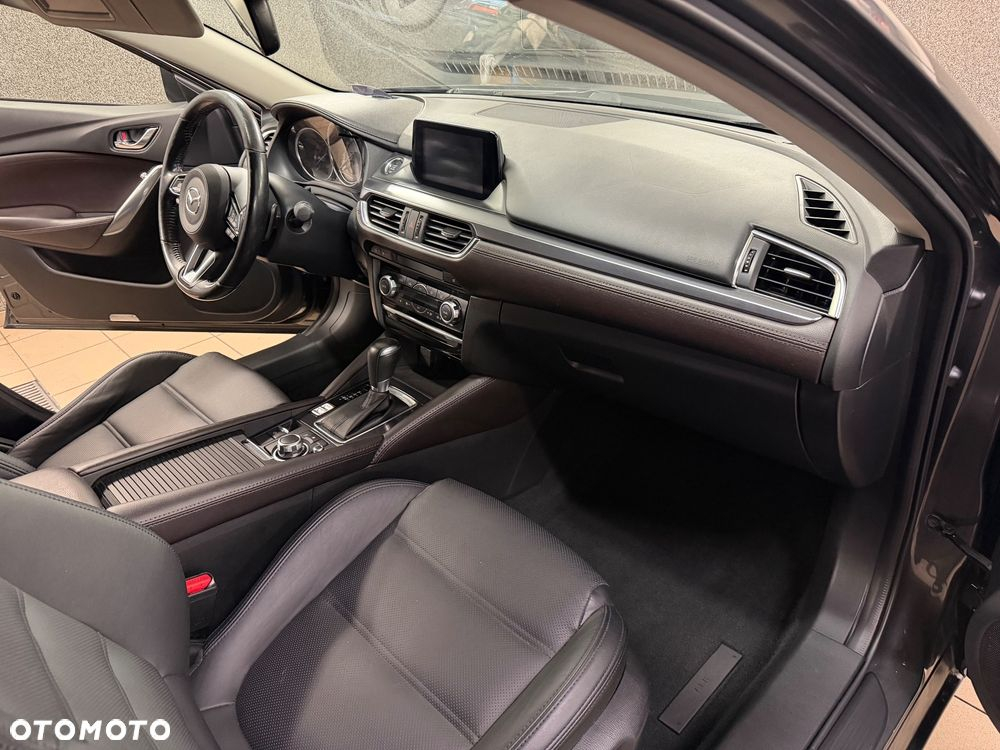

Mazda 6 2.5 SkyPrestige 194KM Automat
Wersja: 2.5 SkyPrestige,
automatyczna skrzynia biegów
Jestem 1 Właścicielem tego auta sprzedaje swój prywatny samochód
Auto od nowości garażowane
2024 roku jesienią auto było konserwowane
Kupiony w Polskim salonie
Nadwozie: 5 drzwi combi
Silnik: 2.5 benzyna, 194 KM
Przebieg: 92 000 km do końca serwisowany ostatni duży serwis w kwietniu tego roku przy przebiegu 91 tys km -wymienione kompletne hamulce przód oraz tył wszystkie filtry oraz olej,Nowy akumulator
Wyposażenie:
Nawigacja
Kamera cofania
Podgrzewane i fotele przednie oraz tylnią kanapą
Pakiet chrom
Podgrzewana kierownica
Skórzana tapicerka
Podłokietnik przód i tył
System Apple CarPlay i Android Auto
Bluetooth
Dwa komplety dywaników Lato zima
Dokupiona w Salonie mata bagażnika
USB
System rozpoznawania znaków
Asystent pasa ruchu
Adaptacyjny tempomat
System pre-crash
Czujniki parkowania przód i tył
ABS, ESP, kontrola trakcji
Poduszki powietrzne: kierowca, pasażer, boczne, kurtyny przód/tył
Elektr. regulowane, składane i podgrzewane lusterka
Elektryczny hamulec postojowy
Światła LED do jazdy dziennej, mijania i tylne
Reflektory skrętne
Czujnik deszczu
Automatyczna klimatyzacja dwustrefowa (przód i tył)
Alufelgi 19
Przyciemniane szyby tylne
Keyless Go, bezkluczykowy start
Head-Up Display
System wspomagania ruszania pod górę
itp.
Możliwość pozostawienia swojego auta w rozliczeniu
Tel
Auto Komis ,, Jar’’ Auta krajowe Zgierz
Pozdrawiam.
Wszystkie informacje zawarte w tym ogłoszeniu należy potwierdzić u sprzedawcy.
Wszystkie informacje zawarte w tym ogłoszeniu należy potwierdzić u sprzedawcy.



